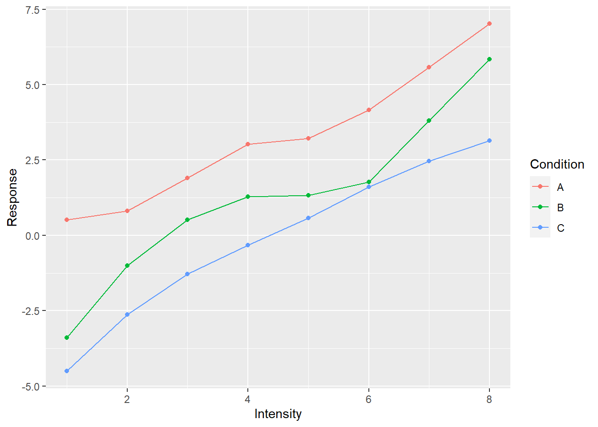
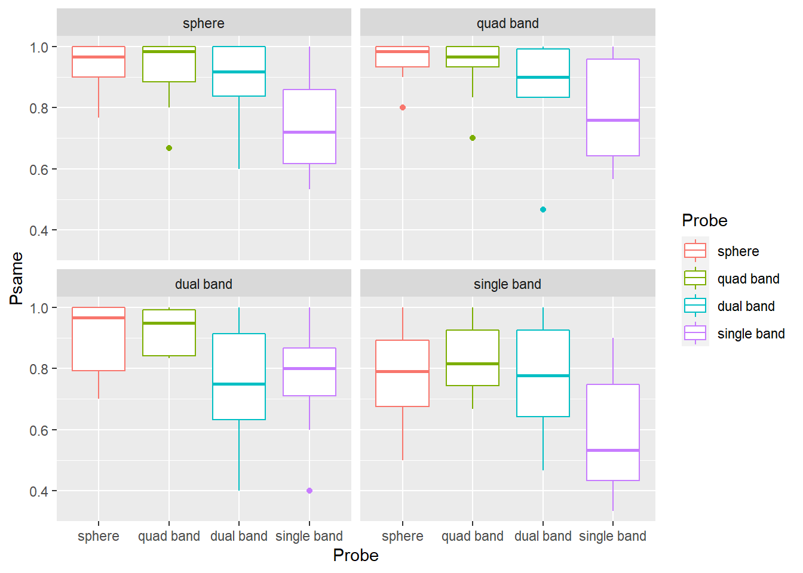
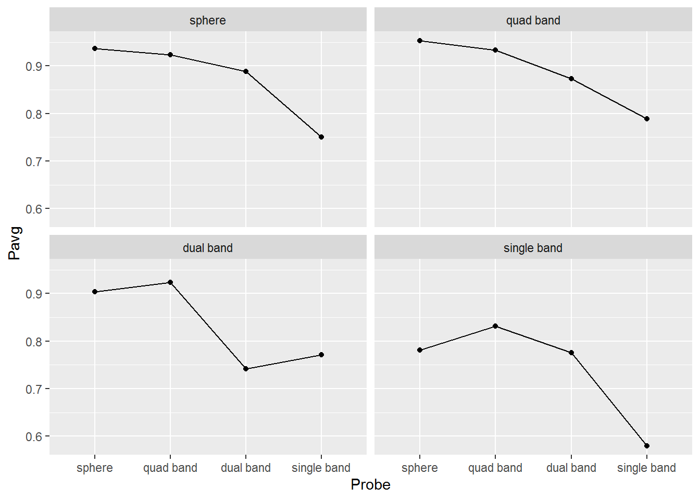
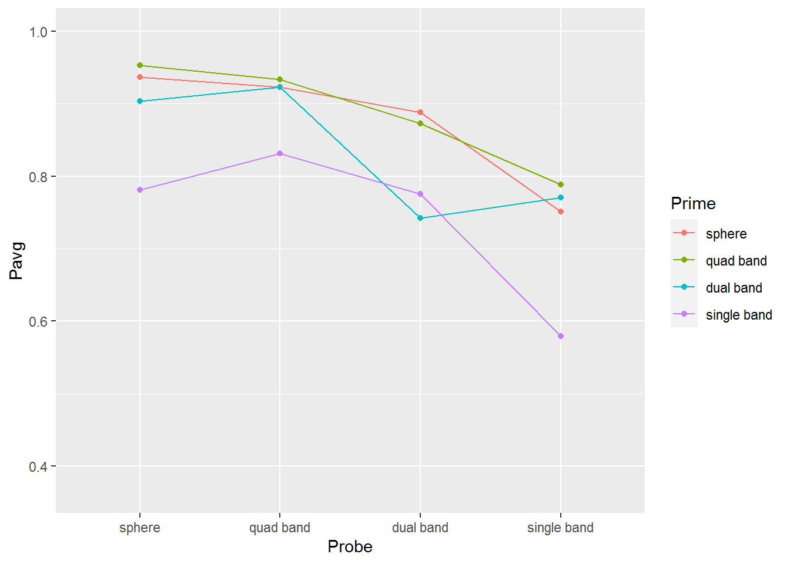
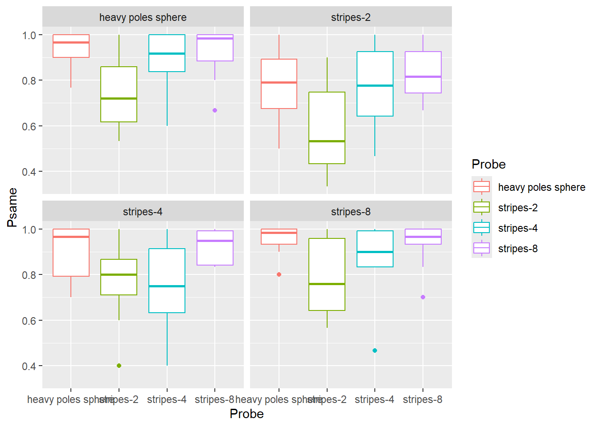
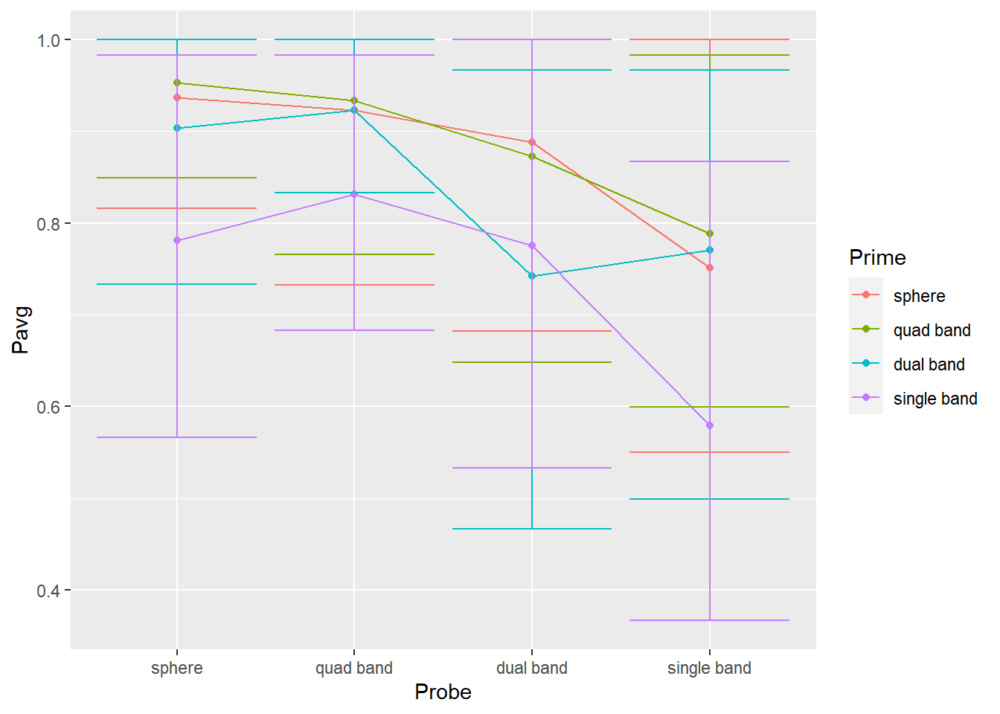
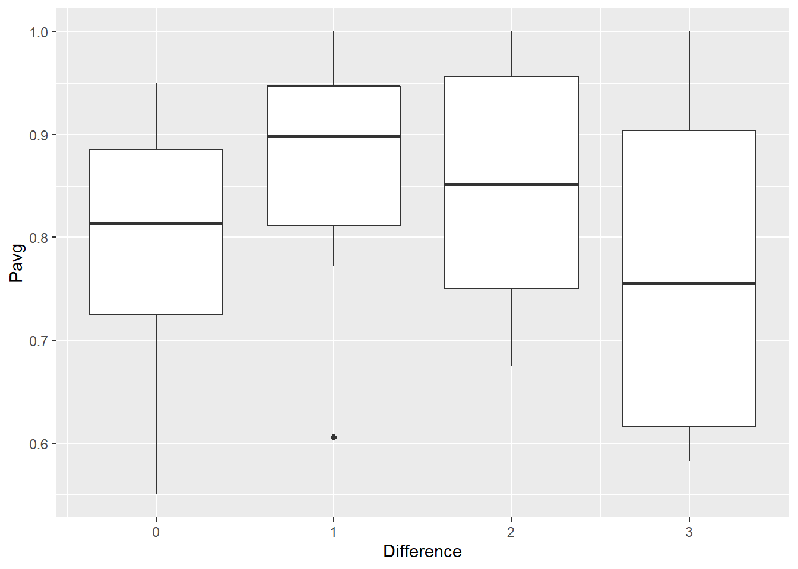

Seminar 7 Factors and Joins
Let us start with a “warm up” exercise that will require combining various things that you already learned. Download persistence.csv file (remember, Chrome/Edge browsers may change the extension to .xls, just rename it back to .csv) and put it into data subfolder in your seminar project folder. This is data from a Master thesis project by Kristina Burkel, published as an article in Attention, Perception, & Psychophysics. The work investigated how change in object’s shape affected perceptual stability during brief interruptions (50 ms blank intervals). The research question was whether the results will match those for one other two history effects, which work at longer time scales. Such match would indicate that both history effects are likely to be produced by the same or shared neuronal representations of 3D rotation. Grab the exercise notebook before we start.
7.1 How to write code
From now on, you will need to implement progressively longer analysis sequences. Unfortunately, the longer and the more complex the analysis is, the easier it is to make a mistake that will ruin everything after that stage. And you will make mistakes, simply because no one is perfect and everyone makes them. I make them all the time. Professional programmers make them. So the skill of programming is not about writing the perfect code on your first attempt, it is writing your code in iterative manner, so that any mistake you make (and, again, you will make them!) will be spotted and fixed immediately, before you continue adding more code. It should be like walking blind through uncertain terrain: One step a time, no running, no jumping, as you have no idea what awaits you.
What does this mean in practical terms? In a typical analysis (such as in the exercise below), you will need to do many things: read data, select columns, filter it, compute new variables, group data and summarize it, plot it, etc. You might be tempted to program the whole thing in one go but it is a terrible idea. Again, if your step #2 does not do what you think it should, your later stages will work with the wrong data and tracing it back to that step #2 may not be trivial (it almost never is). Instead, implement one step at a time and check that the results look as they should. E.g., in the exercise below, read the table. Check, does it look good, does it even have the data? Once you are sure that your reading bit works, proceed to columns selection. Run this two-step code and then check that it works and the table looks the way it should. It does (it has only the relevant columns)? Good, proceed to the next step.
Never skip these checks! Always look at the results of each additional step, do not just hope that they will be as they should. They might, they might not. In the latter case, if you are lucky, you will see that and are in for a long debugging session. But you may not even notice that computation is subtly broken and use its results to draw erroneous conclusions. It may feel overly slow to keep checking yourself continuously but it is a faster way to program in a long term. Moreover, if you do it once step at a time, you actually know, not hope, that it works.
I’ve spent three paragraphs on it (and now adding even the forth one!), because, in my opinion, this approach is the main difference between novice and experienced programmers (or, one could go even further and say between good and bad programmers). And I see this mistake of writing everything in one go repeated again and again irrespective of the tool people use (you can make a really fine mess using SPSS!). So, pace yourself and let’s start programming in earnest!
7.2 Implementing a typical analysis
In the first exercise, I want you to implement the actual analysis performed in the paper. Good news is that by now you know enough to program it!
- Load the data in a table. Name of the variable is up to you. Typically, I use names like
data,reports,results, etc. Don’t forget to specify columns’ type. - Exclude
filenamecolumn (it duplicatesParticipantandSessioncolumns). - Compute a new variable
SameResponsewhich isTRUEwhenResponse1andResponse2match each other (in the experiment, that means that an object was rotating in the same direction before and after the intervention). - For every combination of
Participant,PrimeandProbecompute proportion of same responses. - Plot the results with
Probevariable on x-axis, proportion of same responses on y-axis, and usePrimeto facet plots. Use box plots (or violin plots) to visualize the data. Try adding color, labels, etc. to make plots look nice.
Your final plot should look something like this 
Do exercise 1.
When you examine the plot, you can see some sort of non-monotonic dependence with a dip for "stripes-2" and "stripes-4" objects. In reality, the dependence is monotonic, it is merely the order of values on the x-axis that is wrong. The correct order, based on the area of an object covered with dots, is "heavy poles sphere", "stripes-8", "stripes-4", "stripes-2". Both Prime and Probe are ordinal variables called factors in R. Thus, to fix the order and to make object names a bit better looking, we must figure out how to work with factors in R.
7.3 Factors
Factors are categorical variables, thus variables that have a finite fixed and known set of possible values. They can be either nominal (cannot be ordered) or ordinal (have a specific order to them). An example of the former is the drive train (drv) variable in mpg table. There is a finite set of possible values ("f" for front-wheel drive, "r" for rear wheel drive, and "4" for a four-wheel drive) but ordering them makes no sense. An example of an ordinal variable is a Likert scale that has a finite set of possible responses (for example, "disagree", "neither agree, nor disagree", "agree") and they do a fix specific order to them (participant’s support for a statement is progressively stronger so that "disagree" < "neither agree, nor disagree" < "agree").
You can convert any variable to a factor using factor() or as.factor() functions. The latter is a more limited version of the former, so, below, I will only use factor(). When you convert a variable (a vector) to factor, R:
- figures out all unique values in this vector
- sorts them in an ascending order
- assigns each value an index (“level”)
- uses the actual value as a “label.”
Here is an example of this sequence: there four levels sorted alphabetically.
letters <- c("C", "A", "D", "B", "A", "B")
letters_as_factor <- factor(letters)
letters_as_factor## [1] C A D B A B
## Levels: A B C DYou can extracts levels of a factor variable by using the function with this name
levels(letters_as_factor)## [1] "A" "B" "C" "D"You can specify the order of levels either during the factor() conversion call or later using forcats (more on that later). For example, if we want to have levels in the reverse order we specify it via levels parameter. Note the opposite order of levels.
letters <- c("C", "A", "D", "B", "A", "B")
letters_as_factor <- factor(letters, levels = c("D", "C", "B", "A"))
letters_as_factor## [1] C A D B A B
## Levels: D C B AWe can also specify labels of individual labels instead of using values themselves. Note that labels must
responses <- c(1, 3, 2, 2, 1, 3)
responses_as_factor <- factor(responses, labels = c("negative", "neutral", "positive"))
responses_as_factor## [1] negative positive neutral neutral negative positive
## Levels: negative neutral positiveYou can see indexes that were assigned to each level by converting letter_as_factor to a numeric vector. In this case, R throws away labels and returns indexes.
as.numeric(letters_as_factor)## [1] 2 4 1 3 4 3However, be careful when level labels are numbers. In the example below, you might be expecting that as.numeric(tens) should give you [20, 40, 30] but these are labels! If you need to convert labels to numbers, you have to do it in two steps as.numeric(as.character(tens)): as.character() turns factors to strings (using labels) and as.numeric() converts those labels to numbers (if that conversion can work).
tens <- factor(c(20, 40, 30))
print(tens)## [1] 20 40 30
## Levels: 20 30 40print(as.numeric(tens))## [1] 1 3 2print(as.numeric(as.character(tens)))## [1] 20 40 30For the next exercise, copy-paste the code from exercise #1 and alter it so the labels are "sphere" (for "heavy poles sphere"), "quad band" (for "stripes-8"), "dual band" ("stripes-4"), "single band" (for "stripes-2") and levels are in that order. Your plot should look something like this.

Do exercise 2.
7.4 Forcats
Tidyverse has a package forcats20 that makes working with factors easier. For example, it allows to reorder levels either by hand or automatically based on the order of appearance, frequency, value of other variable, etc. It also gives you flexible tool to changes labels either by hand, by lumping some levels together, by anonymising them, etc. In my work, I mostly use reordering (fct_relevel()) and renaming (fct_recode()) of factors by hand. You will need to use yhese two functions in exercise #3. However, if you find yourself working with factors, it is a good idea to check other forcats functions to see whether they can make your life easier.
To reorder factor by hand, you simply state the desired order of factors, similar to they way you specify this via levels= parameters in factor() function. However, in fct_relevel() you can move only some factors and others are “pushed to the back.”
letters <- c("C", "A", "D", "B", "A", "B")
letters_as_factor <- factor(letters, levels = c("B", "C", "D", "A"))
print(letters_as_factor)## [1] C A D B A B
## Levels: B C D A# specifying order for ALL levels
letters_as_factor <- fct_relevel(letters_as_factor, "D", "C", "B", "A")
print(letters_as_factor)## [1] C A D B A B
## Levels: D C B A# specifying order for just ONE level, the rest are "pushed back"
# "A" should now be the first level and the rest are pushed back in their original order
letters_as_factor <- fct_relevel(letters_as_factor, "A")
print(letters_as_factor)## [1] C A D B A B
## Levels: A D C BYou can also put a level at the very back, as second level, etc. fct_relevel() is very flexible, so check reference whenever you use it.
To rename individual levels you use fct_recode() by providing new = old pairs of values.
letters_as_factor <- factor(c("C", "A", "D", "B", "A", "B"))
letters_as_factor <- fct_recode(letters_as_factor, "_A_" = "A", "_C_" = "C")
print(letters_as_factor)## [1] _C_ _A_ D B _A_ B
## Levels: _A_ B _C_ DNote that this allows you to merge levels by hand.
letters_as_factor <- factor(c("C", "A", "D", "B", "A", "B"))
letters_as_factor <- fct_recode(letters_as_factor, "_AC_" = "A", "_AC_" = "C")
print(letters_as_factor)## [1] _AC_ _AC_ D B _AC_ B
## Levels: _AC_ B DFor exercise #3, redo exercise #2 but using fct_relevel() and fct_recode(). You still need to use factor() function to convert Prime and Probe to factor but do not specify levels and labels. Use fct_relevel() and fct_recode() inside mutate() verbs to reorder and relabel factor values (or, first relabel and then reorder, whatever is more intuitive for you). The end product (the plot) should be the same.
Do exercise 3.
7.5 Plotting group averages
Let us keep practicing and extend our analysis to compute and plots averages for each condition (Prime×Probe) over all participants. Use preprocessing code from exercise #3 but, once you computed proportion per Participant×Prime×Probe, you need to group data over Prime×Probe to compute average performance across observers. Advice, do not reuse the name of the column, e.g. if you used Psame for proportion per Participant×Prime×Probe, use some other name for Prime×Probe (e.g. Pavg). Otherwise, it may turn out to be very confusing (at least, this is a mistake a make routinely). Take a look at the code below, what will the Range values?
tibble(ID = c("A", "A", "B", "B"),
Response = c(1, 2, 4, 6)) %>%
group_by(ID) %>%
summarise(Response = mean(Response),
Range = max(Response) - min(Response))I routinely assume that they should be 1 for "A" (because 2-1) and 2 for "B" (6-4). Nope, both are 0 because by the time Range = max(Response) - min(Response) is executed, original values of Response are overwritten by Response = mean(Response), so it has just one value, the mean. And min() and max() of a single value is that value, so their difference is 0. It is obvious once you carefully consider the code but it is not obvious (at least to me) straightaway. In short, be very careful when you are reusing column names. Better still, do not reuse them, be creating, come up with new ones!
Getting back to the exercise, compute average performance per Prime×Probe. Store the result of the computation in a new variable (I’ve called it persistence_avg) and check that results makes sense, e.g. you have just three columns Prime, Probe, and Pavg (or however you decided to name the column). They should look like this:
| Prime | Probe | Pavg |
|---|---|---|
| sphere | sphere | 0.9366667 |
| sphere | quad band | 0.9233333 |
| sphere | dual band | 0.8885185 |
| sphere | single band | 0.7507407 |
| quad band | sphere | 0.9533333 |
| quad band | quad band | 0.9333333 |
| quad band | dual band | 0.8729630 |
| quad band | single band | 0.7885185 |
| dual band | sphere | 0.9033333 |
| dual band | quad band | 0.9229630 |
| dual band | dual band | 0.7418519 |
| dual band | single band | 0.7707407 |
| single band | sphere | 0.7814815 |
| single band | quad band | 0.8311111 |
| single band | dual band | 0.7751852 |
| single band | single band | 0.5792593 |
Do exercise 4.
Then, plot the results. Use geom_point() plus geom_line() to plot the mean response The plot should like like this (hint, drop color mapping and map Prime to group property).

Do exercise 5.
Tweak code from exercise 4 to plot all lines on the same plot and use color property to distinguish between different primes. 
Do exercise 6.
7.6 Plotting our confidence in group averages
From the plots above, you get a sense that identities of the probe and prime (objects before and after the interruption) matter. Single band appears to be the poorest prime (its line is lowest) and probe (its dots are lower than the rest). Conversely, sphere is an excellent prime (line at the top) and probe (dots are very high). However, averages that we plotted is just a point estimate for most likely effect strength but they alone cannot tell us whether differences in objects’ shape do matter. For this, you need to plot confidence interval: A range that includes a certain proportion of plausible values. I.e., although our mean is our best about average persistence of rotation for our group, other values just below it or just above it, are almost as good of an explanation. Just mathematically, there must be one best explanation but, just mathematically, it is the best explanation due to noise in our sample, not due to real dependency21. Here, we will look at 89% confidence interval to see how broad is the range of values consistent with an average persistence in a group.
To compute confidence interval, you need to compute its lower and upper limits separately via quantiles. A quantile for 0.1 (10%) tells you a value, so that 10% of all values in the vector are below it, the quantile of 0.9 (90%) means that only 10% of values are above it (or 90% are below). So, an 80% confidence intervals includes values that are between 10% and 90% or, alternatively, between 0.1 and 0.9 quantiles. 
To compute this, R has function quantile().
x <- 0:50
quantile(x, 0.1)## 10%
## 5Modify code from from exercise #5 to compute two additional variables/columns for lower and upper limits of the 89% confidence interval (think about what these limits are for 89% CI). Then, use geom_errorbar() to plot 89% CI (you will need to map the two variable you computed to ymin and ymax properties). The plot should like like this (hint, drop color mapping and map Prime to group property).

Do exercise 7.
7.7 Looking at similarity
A different study, which used same four objects, showed that a similar looking history effect but for longer interruptions (1000 ms rather than 50 ms) was modulated by objects similarity. Let us check that hypothesis by computing a rough difference measure. It will assume that their difference is proportional to the absolute “distance” between them on x-axis in the above plot22. E.g., distance between a sphere and a sphere is 0, but between sphere and quad-band or single-band and dual-band is 1. Difference between sphere and dual-band is 2, etc. You can compute it by converting factor variables Prime and Probe to integers (this assumes that levels are in the correct order). Then, you can compute the absolute difference between those indexes and store it as a new column (e.g. Difference). Next, group by Difference and Participant to compute average probability of the same response. Your plot should look like this (you will need to map Difference on group to get four box plots rather than one).

Do exercise 8.
7.8 Joining tables
Sometimes, different information is stored in separate tables. For example, information on participants’ demographics can be stored separately from their responses. The former is the same for all trials and conditions, so it makes little sense to duplicate it. However, for the actual analysis, you need to add this information, merging or, in Tidyverse-speak, joining two tables. To join two tables you must specify “key” columns, columns that contain values that will be used to match rows between the tables.
Assume that we have two tables that both have column named ID that contains a unique of a participant. For the second table, I use functions rep() to repeat each ID three times and runif() to generate random number from a specific range. Note that we have participant "D" in demographics but participants "E" in reports!
demographics <- tibble(ID = c("A", "B", "C", "D"),
Age = c(20, 19, 30, 22))
knitr::kable(demographics)| ID | Age |
|---|---|
| A | 20 |
| B | 19 |
| C | 30 |
| D | 22 |
reports <- tibble(ID = rep(c("A", "B", "C", "E"), each=2),
Report = runif(length(ID), 1, 7))
knitr::kable(reports)| ID | Report |
|---|---|
| A | 5.397018 |
| A | 1.727374 |
| B | 2.963715 |
| B | 4.858185 |
| C | 5.387474 |
| C | 4.605087 |
| E | 1.869443 |
| E | 6.579872 |
Here, ID column will serve as a key to indicate which rows from two columns belong together. dplyr implements four Mutating joins which differ in how the two tables are joined, if a key value is missing in one of them. The inner_join() only include the rows for which key value is present in both tables. In our case, only "A", "B", and "C" participants are in both tables, so inner join will discard rows with "D" (not present in reports) and "E" (not present in demographics).
inner_join(demographics, reports, by="ID") %>%
knitr::kable()| ID | Age | Report |
|---|---|---|
| A | 20 | 5.397018 |
| A | 20 | 1.727374 |
| B | 19 | 2.963715 |
| B | 19 | 4.858185 |
| C | 30 | 5.387474 |
| C | 30 | 4.605087 |
Conversely, full_join() will include all rows from both tables but will fill missing values with NA (Not Available / Missing Values). Thus, it will put NA for the Age of participant "E" and Report of participant "D".
full_join(demographics, reports, by="ID") %>%
knitr::kable()| ID | Age | Report |
|---|---|---|
| A | 20 | 5.397018 |
| A | 20 | 1.727374 |
| B | 19 | 2.963715 |
| B | 19 | 4.858185 |
| C | 30 | 5.387474 |
| C | 30 | 4.605087 |
| D | 22 | NA |
| E | NA | 1.869443 |
| E | NA | 6.579872 |
The left_join() and right_join() include all the row from, respectively, left and right (first and second) tables but discard extra keys from the other one. Note that two functions are just mirror opposites, so doing left_join(demographics, reports, by="ID") is equivalent (but for order of columns and rows) to right_join(reports, demographics, by="ID").
left_join(demographics, reports, by="ID") %>%
knitr::kable()| ID | Age | Report |
|---|---|---|
| A | 20 | 5.397018 |
| A | 20 | 1.727374 |
| B | 19 | 2.963715 |
| B | 19 | 4.858185 |
| C | 30 | 5.387474 |
| C | 30 | 4.605087 |
| D | 22 | NA |
right_join(demographics, reports, by="ID") %>%
knitr::kable()| ID | Age | Report |
|---|---|---|
| A | 20 | 5.397018 |
| A | 20 | 1.727374 |
| B | 19 | 2.963715 |
| B | 19 | 4.858185 |
| C | 30 | 5.387474 |
| C | 30 | 4.605087 |
| E | NA | 1.869443 |
| E | NA | 6.579872 |
You can also use more than one key. Note in the example below, there are no missing / extra keys, so all four joins will produce the same results, they differ only in how they treat those missing/extra keys.
demographics <- tibble(ID = c("A", "B", "A", "B"),
Gender = c("M", "F", "F", "M"),
Age = c(20, 19, 30, 22))
knitr::kable(demographics)| ID | Gender | Age |
|---|---|---|
| A | M | 20 |
| B | F | 19 |
| A | F | 30 |
| B | M | 22 |
reports <- tibble(ID = c("A", "B", "A", "B"),
Gender = c("M", "F", "F", "M"),
Report = runif(length(ID), 1, 7))
knitr::kable(reports)| ID | Gender | Report |
|---|---|---|
| A | M | 1.096241 |
| B | F | 1.910062 |
| A | F | 2.863967 |
| B | M | 3.738506 |
inner_join(demographics, reports, by=c("ID", "Gender")) %>%
knitr::kable()| ID | Gender | Age | Report |
|---|---|---|---|
| A | M | 20 | 1.096241 |
| B | F | 19 | 1.910062 |
| A | F | 30 | 2.863967 |
| B | M | 22 | 3.738506 |
Finally, you key columns can be named differently in two tables. In this case, you need to “match” them explicitly.
demographics <- tibble(VPCode = c("A", "B", "A", "B"),
Sex = c("M", "F", "F", "M"),
Age = c(20, 19, 30, 22))
knitr::kable(demographics)| VPCode | Sex | Age |
|---|---|---|
| A | M | 20 |
| B | F | 19 |
| A | F | 30 |
| B | M | 22 |
reports <- tibble(ID = c("A", "B", "A", "B"),
Gender = c("M", "F", "F", "M"),
Report = runif(length(ID), 1, 7))
knitr::kable(reports)| ID | Gender | Report |
|---|---|---|
| A | M | 3.817637 |
| B | F | 4.802089 |
| A | F | 4.765149 |
| B | M | 2.093483 |
inner_join(demographics, reports, by=c("VPCode"="ID", "Sex"="Gender")) %>%
knitr::kable()| VPCode | Sex | Age | Report |
|---|---|---|---|
| A | M | 20 | 3.817637 |
| B | F | 19 | 4.802089 |
| A | F | 30 | 4.765149 |
| B | M | 22 | 2.093483 |
Download files IM.csv and GP.csv that you need for exercise #8. These are participants responses on two questionnaires with each participant identified by their ID (Participant in IM.csv and Respondent in GP.csv), Condition (which experimental group they belong to), and their Gender. Read both tables and join them so that there no missing values in the table (some participants are missing in GP.csv, so there are three joins that can do this, which one will you pick?). Then, turn Condition and Gender into factors, so that for Condition levels are "control" (1) and "game" (2) and for Gender levels are "female" (1) and "male" (2).
Do exercise 9.